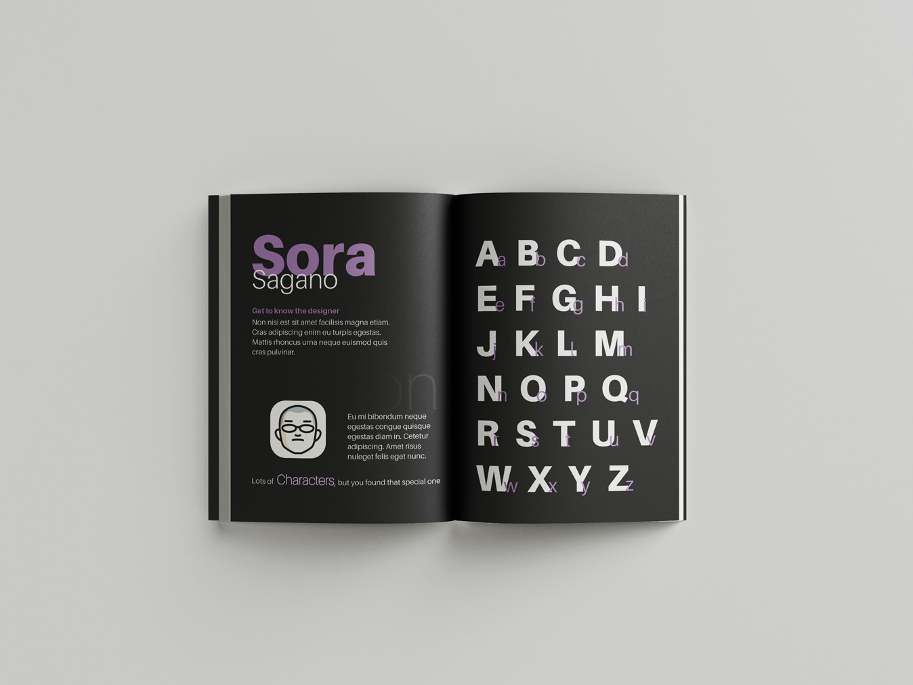

Typography
Aileron Specimen Booklet | Graphic design
Designed the layout for a typography specimen booklet for the typeface Aileron. The concept plays off the literal meaning of aileron (the small pieces on an airplane's wings that balance eachother out to control direction).
The title of the booklet is A Happy Marriage, reflecting the aileron characteristics of balance and harmony. Throughout the booklet a small love story is written. Each page's written line is playful and fun, using puns to reflect it's specific focus while still sticking to the concept of a happy marriage by giving small tips.
- 